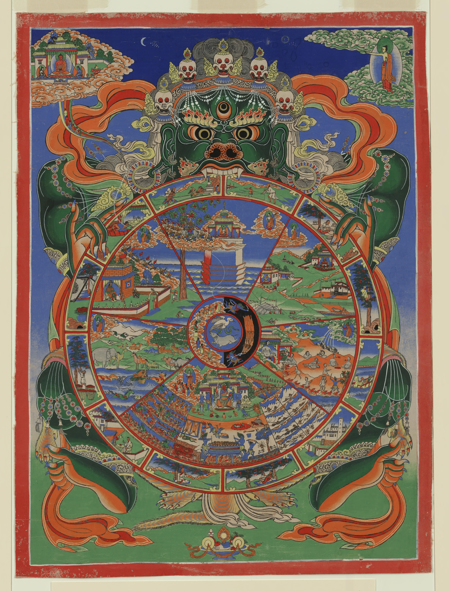

① 無明
傳統唐卡圖像｜持杖而行的盲者
看不清方向，象徵對生命實況的無知。
阿含經典解說
對苦、集、滅、道，業與果報、緣起等不如實知；於六觸入處不如實覺知。
彼云何無明？……不知苦、不知集、不知滅、不知道……於六觸入處，不如實覺知。
跟著小貓一頁一頁讀，慢慢對照插圖、原字幕和經文。
 開始翻閱 →
開始翻閱 →先抓住一個重點
「此有故彼有，此起故彼起。」《雜阿含經》第298經
十二因緣將苦的生起，說成十二個相依的環節。繪本由「老死」往回追問；下方唐卡則從「無明」順時針觀看。兩種閱讀方向，幫助我們認出同一個問題：什麼條件，使苦延續？
看第287經如何追問苦的止息 →沿著最外圈，找出十二因緣。
這幅唐卡呈現藏傳佛教對輪迴與緣起的圖像詮釋。繪本與下方經義解說主要依《雜阿含經》；圖像象徵與經典定義分別標示。

傳統唐卡圖像｜持杖而行的盲者
看不清方向，象徵對生命實況的無知。
阿含經典解說
對苦、集、滅、道，業與果報、緣起等不如實知；於六觸入處不如實覺知。
彼云何無明？……不知苦、不知集、不知滅、不知道……於六觸入處，不如實覺知。
傳統唐卡圖像｜製作器皿的陶匠
捏塑陶器，象徵有意志的造作。
阿含經典解說
身、口、意的造作。在緣起的脈絡中，由無明為緣而有行。
行有三種——身行、口行、意行。
傳統唐卡圖像｜在樹上攀援的猴子
猴子攀枝，象徵識的活動與變化。
阿含經典解說
六識是眼、耳、鼻、舌、身、意的識知；不是常住不變的觀察者。第289經另以獼猴說明心、意、識須臾轉變。
謂六識身——眼識身、耳識身、鼻識身、舌識身、身識身、意識身。
傳統唐卡圖像｜乘舟的人
人與舟配合前行，呈現身心相依的譬喻。
阿含經典解說
本篇依第298經：「名」是受、想、行、識四無色陰；「色」是四大與四大所造色。
云何名？謂四無色陰——受陰、想陰、行陰、識陰。云何色？謂四大、四大所造色。
傳統唐卡圖像｜有門窗的房舍
房舍的開口，象徵與境相接的六個門戶。
阿含經典解說
六內入處是眼、耳、鼻、舌、身、意。它們與對應的境、識，是理解觸的入口。
謂六內入處——眼入處、耳入處、鼻入處、舌入處、身入處、意入處。
傳統唐卡圖像｜相擁的男女
以相遇、接觸的形象表現「觸」。
阿含經典解說
第298經列眼、耳、鼻、舌、身、意六觸身。圖中的擁抱是譬喻，經義涵蓋六類觸。
謂六觸身——眼觸身、耳觸身、鼻觸身、舌觸身、身觸身、意觸身。
傳統唐卡圖像｜眼中箭的人
以刺痛鮮明地呈現感受。
阿含經典解說
受有苦受、樂受、不苦不樂受三類，並不限於圖中表現的痛苦。
謂三受——苦受、樂受、不苦不樂受。
傳統唐卡圖像｜接受飲料的飲者
以口渴求飲，象徵渴望仍想繼續滿足。
阿含經典解說
此處的愛是渴愛。第298經列欲愛、色愛、無色愛；在緣起中，受緣愛、愛緣取。
謂三愛——欲愛、色愛、無色愛。
傳統唐卡圖像｜伸手採果的人
把果實抓住，象徵執取與不肯放手。
阿含經典解說
四取為欲取、見取、戒取、我取。渴愛增長而成為執取，進一步作為有的條件。
四取——欲取、見取、戒取、我取。
傳統唐卡圖像｜床帳中的男女
本圖用男女交合表現生命相續的條件。不同生命之輪可能採用不同圖像。
阿含經典解說
第298經列三有：欲有、色有、無色有。它在十二支中承接「取」，並作為「生」的條件。
三有——欲有、色有、無色有。
傳統唐卡圖像｜正在生產的婦女
以分娩表現新生命的出生。
阿含經典解說
眾生在各類生命中出生，得到陰、界、入處與命根。
得陰、得界、得入處、得命根，是名為生。
傳統唐卡圖像｜被背負運送的遺體
以送行遺體的畫面，提醒生命會衰老與結束。
阿含經典解說
老是身體與諸根衰弱；死是身壞、壽盡、命滅、捨陰時到。由生為緣而有老死。
此死及前說老，是名老死。
圖像：Srid pa’i ’khor lo（生命之輪），美國國會圖書館亞洲部藏，經 Wikimedia Commons 取得；來源頁標示 Public Domain Mark 1.0。中文標籤為本頁加註。館藏紀錄 ↗ · 原圖與權利標示 ↗
回到阿含經典
樂、苦、不苦不樂，都是「受」。圖中的一支箭，只呈現其中的苦受。
三受的定義 →感受之後，心可能想要延續、佔有與抓牢。觀察渴愛如何增長，也是認識苦的入口。
渴愛與毒飲的譬喻 →緣起也說明苦的止息。第287經以古道為喻，指出通往老死滅的八正道。
古仙人道 →也可以搭配原版影片，一起閱讀故事與經文。
從圖像認識十二支，再以原經對照。
以《雜阿含經》第298經為主，對照影片引用的八部經典。
劉宋・求那跋陀羅譯。正文依台大獅子吼佛學專站版本，省略註解標記與插入式說明；異體字與版本校勘可至原文入口查看。
十二支的定義
逐一說明無明、行、識，直到生與老死。
如是我聞：
一時，佛住拘留搜調牛聚落。
爾時，世尊告諸比丘：「我今當說緣起法，法說、義說。諦聽，善思，當為汝說。
「云何緣起法法說？謂此有故彼有，此起故彼起，謂緣無明行，乃至純大苦聚集，是名緣起法法說。
「云何義說？謂緣無明行者。彼云何無明？若不知前際、不知後際、不知前後際，不知於內、不知於外、不知內外，不知業、不知報、不知業報，不知佛、不知法、不知僧，不知苦、不知集、不知滅、不知道，不知因、不知因所起法，不知善不善、有罪無罪、習不習、若劣若勝、染污清淨，分別緣起，皆悉不知；於六觸入處，不如實覺知，於彼彼不知、不見、無無間等、癡闇、無明、大冥，是名無明。
「緣無明行者，云何為行？行有三種——身行、口行、意行。緣行識者，云何為識？謂六識身——眼識身、耳識身、鼻識身、舌識身、身識身、意識身。緣識名色者，云何名？謂四無色陰——受陰、想陰、行陰、識陰。云何色？謂四大、四大所造色，是名為色。此色及前所說名，是為名色。緣名色六入處者，云何為六入處？謂六內入處——眼入處、耳入處、鼻入處、舌入處、身入處、意入處。緣六入處觸者，云何為觸？謂六觸身——眼觸身、耳觸身、鼻觸身、舌觸身、身觸身、意觸身。緣觸受者，云何為受？謂三受——苦受、樂受、不苦不樂受。緣受愛者，彼云何為愛？謂三愛——欲愛、色愛、無色愛。緣愛取者，云何為取？四取——欲取、見取、戒取、我取。緣取有者，云何為有？三有——欲有、色有、無色有。緣有生者，云何為生？若彼彼眾生，彼彼身種類生，超越和合出生，得陰、得界、得入處、得命根，是名為生。緣生老死者，云何為老？若髮白露頂，皮緩根熟，支弱背僂，垂頭呻吟，短氣前輸，柱杖而行，身體黧黑，四體班駮，闇鈍垂熟，造行艱難羸劣，是名為老。云何為死？彼彼眾生，彼彼種類沒、遷移、身壞、壽盡、火離、命滅，捨陰時到，是名為死。此死及前說老，是名老死。是名緣起義說。」
佛說此經已，諸比丘聞佛所說，歡喜奉行。
由無明觸到明觸
從六觸入處觀察五受陰，以及無明與明的轉變。
如是我聞：
一時，佛住舍衛國祇樹給孤獨園。
爾時，世尊告諸比丘：「有五受陰。云何為五？色受陰，受、想、行、識受陰。若諸沙門、婆羅門見有我者，一切皆於此五受陰見我。諸沙門、婆羅門見色是我，色異我，我在色，色在我；見受、想、行、識是我，識異我，我在識，識在我。愚癡無聞凡夫以無明故，見色是我、異我、相在，言我真實不捨；以不捨故，諸根增長；諸根長已，增諸觸；六觸入處所觸故，愚癡無聞凡夫起苦樂覺，從觸入處起。何等為六？謂眼觸入處，耳、鼻、舌、身、意觸入處。
「如是，比丘！有意界、法界、無明界，愚癡無聞凡夫無明觸故，起有覺、無覺、有無覺、我勝覺、我等覺、我卑覺、我知我見覺。如是知、如是見覺，皆由六觸入故。多聞聖弟子於此六觸入處，捨離無明而生明，不生有覺、無覺、有無覺、勝覺、等覺、卑覺、我知我見覺。如是知、如是見已，先所起無明觸滅，後明觸覺起。」
佛說此經已，諸比丘聞佛所說，歡喜奉行。
逆觀苦的生起
從老死往前追問：它依什麼條件而生？
如是我聞：
一時，佛住舍衛國祇樹給孤獨園。
爾時，世尊告諸比丘：「我憶宿命未成正覺時，獨一靜處，專精禪思，生如是念：『世間難入，所謂若生、若老、若病、若死，若遷、若受生，然諸眾生，生、老、病、死，上及所依，不如實知。』
「我作是念：『何法有故生有？何法緣故生有？』即正思惟，起無間等，知：『有有故生有，有緣故生有。』
「復思惟：『何法有故有有？何法緣故有有？』即正思惟，如實無間等起，知：『取有故有有，取緣故有有。』
「又作是念：『取復何緣？何法有故取有？何法緣故取有？』即正思惟，如實無間等起，知：『取法味著、顧念、心縛，愛欲增長，彼愛有故取有；愛故緣取，取緣有，有緣生，生緣老、病、死、憂、悲、惱、苦。如是如是純大苦聚集。』
「諸比丘！於意云何？譬如緣膏油及炷，燈明得燒，數增油、炷，彼燈明得久住不？」
答言：「如是，世尊！」
「如是，諸比丘！於色取味著、顧念、愛縛增長；愛緣故取，取緣有，有緣生，生緣老、病、死、憂、悲、惱、苦。如是如是純大苦聚集。
「我時復作是念：『何法無故無此老、病、死？何法滅故老、病、死滅？』即正思惟，起如實無間等：『無生則無老、病、死，生滅故則老、病、死滅。』
「復作是念：『何法無故無生？何法滅故生滅？』即正思惟，起如實無間等：『有無故生無，有滅故生滅。』
「又復思惟：『何法無故有無？何法滅故有滅？』即正思惟，生如實無間等觀：『取無故有無，取滅故有滅。』
「又作是念：『何法無故取無？何法滅故取滅？』即正思惟，生如實無間等觀：『所取法無常、生滅、離欲、滅盡、捨離，心不顧念，心不縛著，愛則滅；彼愛滅故取滅，取滅故有滅，有滅故生滅，生滅故老、病、死、憂、悲、惱、苦滅，如是如是純大苦聚滅。』
「諸比丘！於意云何？譬如油、炷然燈，若不增油治炷，非彼燈明未來不生、盡、磨滅耶？」
比丘白佛言：「如是，世尊！」
「如是，諸比丘！於所取法觀察無常、生滅、離欲、滅盡、捨離，心不顧念，心不縛著，愛則滅；愛滅則取滅，……乃至純大苦聚滅。」
佛說此經已，諸比丘聞佛所說，歡喜奉行。
古仙人道
從老死的止息逆觀緣起，並指出通往止息的八正道。
如是我聞：
一時，佛住舍衛國祇樹給孤獨園。
爾時，世尊告諸比丘：「我憶宿命未成正覺時，獨一靜處，專精禪思，作是念：『何法有故老死有？何法緣故老死有？』即正思惟，生如實無間等：『生有故老死有，生緣故老死有。』
如是，有……取……愛……受……觸……六入處……名色：「『何法有故名色有？何法緣故名色有？』即正思惟，如實無間等生：『識有故名色有，識緣故有名色有。』
「我作是思惟時，齊識而還，不能過彼，謂：緣識名色，緣名色六入處，緣六入處觸，緣觸受，緣受愛，緣愛取，緣取有，緣有生，緣生老、病、死、憂、悲、惱、苦。如是如是純大苦聚集。
「我時作是念：『何法無故則老死無？何法滅故老死滅？』即正思惟，生如實無間等：『生無故老死無，生滅故老死滅。』
如是，生、有、取、愛、受、觸、六入處、名色、識、行廣說。
「我復作是思惟：『何法無故行無？何法滅故行滅？』即正思惟，如實無間等：『無明無故行無，無明滅故行滅，行滅故識滅，識滅故名色滅，名色滅故六入處滅，六入處滅故觸滅，觸滅故受滅，受滅故愛滅，愛滅故取滅，取滅故有滅，有滅故生滅，生滅故老、病、死、憂、悲、惱、苦滅，如是如是純大苦聚滅。』
「我時作是念：『我得古仙人道、古仙人逕、古仙人道跡，古仙人從此跡去，我今隨去。』譬如有人遊於曠野，披荒覓路，忽遇故道古人行處，彼則隨行，漸漸前進，見故城邑、故王宮殿、園觀浴池、林木清淨。彼作是念：『我今當往白王令知。』即往白王：『大王當知，我遊曠野，披荒求路，忽見故道古人行處，我即隨行；我隨行已，見故城邑、故王宮殿、園觀浴池、林流清淨，大王可往居止其中。』王即往彼，止住其中，豐樂安隱，人民熾盛。
「今我如是，得古仙人道、古仙人逕、古仙人跡，古仙人去處，我得隨去，謂八聖道，正見、正志、正語、正業、正命、正方便、正念、正定。我從彼道見老病死、老病死集、老病死滅、老病死滅道跡，見生、有、取、愛、受、觸、六入處、名色、識、行、行集、行滅、行滅道跡。我於此法自知自覺，成等正覺，為比丘、比丘尼、優婆塞、優婆夷，及餘外道沙門、婆羅門、在家、出家，彼諸四眾聞法正向、信樂，知法善，梵行增廣，多所饒益，開示顯發。」
佛說此經已，諸比丘聞佛所說，歡喜奉行。
心如獼猴
以猴子攀枝譬喻心、意、識的須臾轉變。
如是我聞：
一時，佛住王舍城迦蘭陀竹園。
爾時，世尊告諸比丘：「愚癡無聞凡夫於四大身厭患、離欲、背捨，而非識。所以者何？見四大身有增、有減、有取、有捨，而於心、意、識，愚癡無聞凡夫不能生厭、離欲、解脫。所以者何？彼長夜於此保惜繫我，若得、若取，言：『是我、我所、相在。』是故愚癡無聞凡夫不能於彼生厭、離欲、背捨。愚癡無聞凡夫寧於四大身繫我、我所，不可於識繫我、我所。所以者何？四大色身或見十年住，二十、三十，乃至百年，若善消息或復少過。彼心、意、識日夜時刻，須臾轉變，異生、異滅。猶如獼猴遊林樹間，須臾處處，攀捉枝條，放一取一。彼心、意、識亦復如是，異生、異滅。
「多聞聖弟子於諸緣起善思惟觀察，所謂樂觸緣生樂受，樂受覺時，如實知樂受覺；彼樂觸滅，樂觸因緣生受亦滅、止、清涼、息、沒。如樂受，苦觸……喜觸……憂觸……捨觸因緣生捨受，捨受覺時，如實知捨受覺；彼捨觸滅，彼捨觸因緣生捨受亦滅、止、清涼、息、沒。彼如是思惟：『此受觸生、觸樂、觸縛，彼彼觸樂故，彼彼受樂，彼彼觸樂滅，彼彼受樂亦滅、止、清涼、息、沒。』如是，多聞聖弟子於色生厭，於受、想、行、識生厭，厭故不樂，不樂故解脫，解脫知見：『我生已盡，梵行已立，所作已作，自知不受後有。』」
佛說此經已，諸比丘聞佛所說，歡喜奉行。
渴愛與毒飲
以飲料中有毒的譬喻，說明愛的增長與遠離。
如是我聞：
一時，佛住王舍城迦蘭陀竹園。
爾時，世尊告諸比丘：「我說內觸法，汝等為取不？」
時，有異比丘從座起，整衣服，稽首禮足，合掌白佛言：「世尊！所說內觸法，我已取也。」時，彼比丘於佛前如是如是自記說。如是如是世尊不悅。
爾時，尊者阿難在佛後執扇扇佛，佛告阿難：「如聖法、律內觸法，異於此比丘所說。」
阿難白佛：「今正是時，唯願世尊為諸比丘說賢聖法、律內觸法，諸比丘聞已，當受奉行。」
佛告阿難：「善哉，諦聽，當為汝說。此諸比丘取內觸法，應如是思惟：『若眾生所有種種眾苦生，此苦何因、何集、何生、何觸？』作如是取時，當知此苦億波提因、億波提集、億波提生、億波提轉。
「復次，比丘內觸法，又億波提何因、何集、何生、何觸？彼取時當復知億波提愛因、愛集、愛生、愛觸。
「復次，比丘取內觸法，當復知愛何因、何集、何生、何觸。如是取時當知世間所念諦正之色，於彼愛生而生、繫而繫、住而住。
「若諸沙門、婆羅門於世間所念諦正之色，作常想、恒想、安隱想、無病想、我想、我所想而見，則於此色愛增長；愛增長已，億波提增長，億波提增長已，苦增長；苦增長已，則不解脫生、老、病、死、憂、悲、惱、苦，我說彼不解脫苦。譬如路側清涼池水，香味具足，有人以毒著中，陽春之月，諸行路者風熱渴逼，競來欲飲。有人語言：『士夫！此是清涼池，色香味具足，然中有毒，汝等勿飲。若當飲者，或令汝死，或近死苦。而彼渴者不信而飲，雖得美味，須臾或死，或近死苦。』如是，沙門婆羅門見世間可念端正之色，作常見、恒見、安隱見、無病見、我、我所見，乃至不得解脫生、老、病、死、憂、悲、惱、苦。
「若諸沙門、婆羅門於世間可念端正之色觀察如病、如癰、如刺、如殺、無常、苦、空、非我，彼愛則離，愛離故億波提離，億波提離故則苦離，苦離故則生、老、病、死、憂、悲、惱、苦離。譬如路側清涼池水，香味具足，有人以毒著中，陽春之月，諸行路者風熱渴逼，競來欲飲，有人語言：『此水有毒！汝等勿飲，若當飲者，或令汝死，或近死苦。』彼則念言：『此水有毒，若當飲者，或令我死，或近死苦，我且忍渴，食乾麨飯，不取水飲。』如是，沙門、婆羅門於世間可念之色觀察如病、如癰、如刺、如殺、無常、苦、空、非我，乃至解脫生、老、病、死、憂、悲、惱、苦。是故，阿難！於此法如是見、如是聞、如是覺、如是知，於過去、未來亦如此道。如是觀察。」
佛說此經已，諸比丘聞佛所說，歡喜奉行。
思量緣起
依次思量各支的因、集、生、觸。
如是我聞：
一時，佛住王舍城迦蘭陀竹園。
爾時，世尊告諸比丘：「云何思量觀察正盡苦，究竟苦邊？時，思量眾生所有眾苦，種種差別，此諸苦何因、何集、何生、何觸？思量取因、取集、取生、取觸。若彼取滅無餘，眾苦則滅，彼所乘苦滅道跡如實知，修行彼向次法，是名比丘向正盡苦，究竟苦邊，所謂取滅。
「復次，比丘思量觀察正盡苦，究竟苦邊。時，思量彼取何因、何集、何生、何觸？思量彼取愛因、愛集、愛生、愛觸。彼愛永滅無餘，取亦隨滅，彼所乘取滅道跡如實知，修習彼向次法，是名比丘向正盡苦，究竟苦邊，所謂愛滅。
「復次，比丘思量觀察正盡苦，究竟苦邊。則思量彼愛何因、何集、何生、何觸？知彼愛受因、受集、受生、受觸。彼受永滅無餘，則愛滅，彼所乘愛滅道跡如實知，修習彼向次法，是名比丘向正盡苦，究竟苦邊，所謂受滅。
「復次，比丘思量觀察正盡苦，究竟苦邊。時，思量彼受何因、何集、何生、何觸？知彼受觸因、觸集、觸生、觸緣。彼觸永滅無餘，則受滅，彼所乘觸滅道跡如實知，修習彼向次法，是名比丘向正盡苦，究竟苦邊。
「復次，比丘思量觀察正盡苦，究竟苦邊。時，思量彼觸何因、何集、何生、何觸？當知彼觸六入處因、六入處集、六入處生、六入處觸。彼六入處滅無餘，則觸滅，彼所乘六入處滅道跡如實知，修習彼向次法，是名比丘向正盡苦，究竟苦邊。
「復次，比丘思量觀察正盡苦，究竟苦邊。時，思量彼六入處何因、何集、何生、何觸？知彼六入處名色因、名色集、名色生、名色觸。名色永滅無餘，則六入處滅，彼所乘名色滅道跡如實知，修習彼向次法，是名比丘向正盡苦，究竟苦邊，所謂名色滅。
「復次，比丘思量正盡苦，究竟苦邊。時，思量名色何因、何集、何生、何觸？知彼名色識因、識集、識生、識觸。彼識欲滅無餘，則名色滅，彼所乘識滅道跡如實知，修習彼向次法，是名比丘向正盡苦，究竟苦邊，所謂識滅。
「復次，比丘思量觀察正盡苦，究竟苦邊。時，思量彼識何因、何集、何生、何觸？知彼識行因、行集、行生、行觸，作諸福行，善識生；作諸不福不善行，不善識生；作無所有行，無所有識生，是為彼識行因、行集、行生、行觸。彼行欲滅無餘，則識滅，彼所乘行滅道跡如實知，修習彼向次法，是名比丘向正盡苦，究竟苦邊，所謂行滅。
「復次，比丘思量觀察正盡苦，究竟苦邊。時，思量彼行何因、何集、何生、何觸？知彼行無明因、無明集、無明生、無明觸。彼福行無明緣，非福行亦無明緣，非福不福行亦無明緣。
「是故當知，彼行無明因、無明集、無明生、無明觸。彼無明永滅無餘，則行滅，彼所乘無明滅道跡如實知，修習彼向次法，是名比丘向正盡苦，究竟苦邊，所謂無明滅。」
佛告比丘：「於意云何？若不樂無明而生明，復緣彼無明作福行、非福行、無所有行不？」
比丘白佛：「不也，世尊！所以者何？多聞聖弟子不樂無明而生明，無明滅則行滅，行滅則識滅，如是乃至生、老、病、死、憂、悲、惱、苦滅，如是如是純大苦聚滅。」
佛言：「善哉，善哉，比丘！我亦如是說，汝亦知此。於彼彼法起彼彼法，生彼彼法，滅彼彼法，滅、止、清涼、息、沒。若多聞聖弟子無明離欲而生明，身分齊受所覺，身分齊受所覺時如實知；若壽分齊受所覺，壽分齊受所覺時如實知；身壞時壽命欲盡，於此諸受一切所覺滅盡無餘。譬如力士取新熟瓦器，乘熱置地，須臾散壞，熱勢悉滅。如是，比丘無明離欲而生明，身分齊受所覺如實知，壽分齊受所覺如實知，身壞命終，一切受所覺悉滅無餘。」
佛說此經已，諸比丘聞佛所說，歡喜奉行。
識住與名色
思量、妄想、攀緣，與苦聚集及苦聚滅。
如是我聞：
一時，佛住舍衛國祇樹給孤獨園。
爾時，世尊告諸比丘：「若思量、若妄想者，則有使攀緣識住；有攀緣識住故，入於名色；入名色故，有未來世生、老、病、死、憂、悲、惱、苦，如是純大苦聚集。若不思量、無妄想，無使、無攀緣識住；無攀緣識住故，不入名色，不入名色故，生、老、病、死、憂、悲、惱、苦滅，如是純大苦聚滅。」
佛說此經已，諸比丘聞佛所說，歡喜奉行。
三受與隨眠
對樂受、苦受、不苦不樂受，分別斷除貪、瞋、癡。
如是我聞：
一時，佛住王舍城迦蘭陀竹園。
爾時，尊者羅睺羅往詣佛所，稽首佛足，退坐一面，白佛言：「世尊！云何知、云何見我此識身及外境界一切相，得無有我、我所見、我慢繫著使？」
佛告羅睺羅：「有三受——苦受、樂受、不苦不樂受。觀於樂受，為斷樂受貪使故，於我所修梵行；斷苦受瞋恚使故，於我所修梵行；斷不苦不樂受癡使故，於我所修梵行。
「羅睺羅！若比丘樂受貪使已斷、已知，苦受恚使已斷、已知，不苦不樂受癡使已斷、已知者，是名比丘斷除愛欲縛、去諸結，慢無間等，究竟苦邊。」
爾時，世尊即說偈言：
「樂受所受時， 則不知樂受， 貪使之所使， 不見出要道。 苦受所受時， 則不知苦受， 瞋恚使所使， 不見出要道。 不苦不樂受， 正覺之所說， 不善觀察者， 終不度彼岸。 比丘勤精進， 正知不動轉， 如此一切受， 慧者能覺知。 覺知諸受者， 現法盡諸漏， 明智者命終， 不墮於眾數。 眾數既已斷， 永處般涅槃。」
佛說此經已，尊者羅睺羅聞佛所說，歡喜奉行。